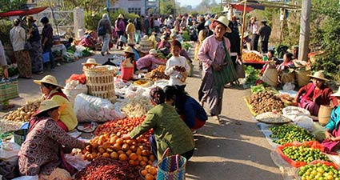

Things to do in Kalaw
Founded as a hill station by British civil servants fleeing the heat of the plains, Kalaw still feels like a high-altitude holiday resort: the air is cool, the atmosphere is calm, the streets are leafy and green, and the surrounding hills are the only place in Myanmar where travellers can trek overnight without prior permission.
In addition to foreign trekkers, Kalaw has a significant population of Nepali Gurkhas and Indian Hindus, Sikhs and Muslims, who came here to build the roads and railway line during the British period.
Colonial Buildings in Kalaw
Kalaw is one of the hill stations during the British’s colonial time. Many colonial buildings such as houses, hospital, golf course, tennis ground, Anglican Church can be seen around Kalaw.
Morning Market in Kalaw
 It starts early in the morning and looked similar to other Southeast Asian open markets that I have seen. It’s a typical outdoor market that offers everything for the locals and some interesting sights for tourists. Many people who are selling and buying produce hiked from great distances from the surrounding villages. The atmosphere makes up for a great activity as the buzz of people and colors is interesting to immerse with early in the morning.
Short walks and nearby attractions
Shorter walks in and around Kalaw can easily be done independently. For some excellent views of Kalaw, its market and the surrounding hills, you can head up to the Thein Taung Pagoda, which is north of Union Highway (the main road through Kalaw) and hosts a Buddhist monastery.
A pleasant walk south of the central market takes you to the Hnee Pagoda, in which you will find a 500-year old bamboo Buddha, and the Shwe U Min Pagoda (Shwe Oo Min Paya), a cave filled with golden Buddhas. On these walks, and in the surrounding hills, you will find reminders of British colonial times, such as restored cottages and a different kind of religious monument – Christ the King Church. This is a great example of active Christian worship in Myanmar, with popular daily mass and Sunday services.
A good example of Myanmar’s new drive for eco tourism is the Green Hill Valley elephant camp. A 40-minute taxi ride from Kalaw, the camp was founded in 2011 to protect the local environment and care for ageing and poorly elephants, whilst allowing visitors to see them in their natural habitat. Short rides on the elephants are permitted, but all activities are conducted primarily with the animals’ welfare in mind. Various trekking options are also available in the area.
Longer treks
For a more immersive experience, and to really get a taste of the life of the local Danu, Pa-O, Palaung and Taung Yo ethnic groups, you can go on a longer two- or three-day hike. Guides can be found around the market and at most hotels; they will take you on trips with beautiful views of the Shan hills surrounding Kalaw, as well as numerous pagodas and hill tribe villages.
If you are feeling adventurous then there is nothing stopping you going it alone. Bear in mind, however, that villagers are unlikely to speak any English, and having a phone with GPS enabled will help (make sure to pre-load the maps with wifi if you do not have Myanmar mobile network access).
Because it offers such a interesting and scenic route to another one of the Myanmar’s tourist highlights, the journey to Inle Lake tends to be the most popular long-distance trek. It typically takes three days, including two overnight stays – one at a local tribe farmstead, the other at a Buddhist temple.
Tours usually include cooked meals and bedding, and your bags can be taken separately by car to your hotel in Inle Lake (where most people stay at the town of Nyaung Shwe). The cost of tours depends on the time of year and the size of your group (going in larger groups means a lower price), but will usually range between $35 and $60.
Another fascinating, and less well-trodden, trek is the journey from Pindaya. The best approach is to take a two-hour minibus (K35,000) or tuk tuk (K25,000) to Pindaya; see the sights there; and then return by foot, which will take two or three days.
Kalaw At a Glance
Climate:
Summer: March - MayRaining Season: June - September
Winter: October - February
Clothing:
Light clothing is recommendedCurrency:
Kyats or USDCustoms & Duty:
For more information:www.myanmarcustoms.gov.mm
Electricity:
220 voltsEmergency Call Numbers:
Police – 199Mobile Phone Networks:
GSM, CDMA and WCDMAShopping & Business Hours:
10:00am to 9:00pmBank & Gov offices Opening Hours:
9:00am to 4:30pmTime Zone:
GMT +6:30Tipping:
Tipping is not a must in Myanmar but guests are welcome to offer tokens of appreciation for good services offered.VISA:
For more information, please visit:https://evisa.moip.gov.mm/